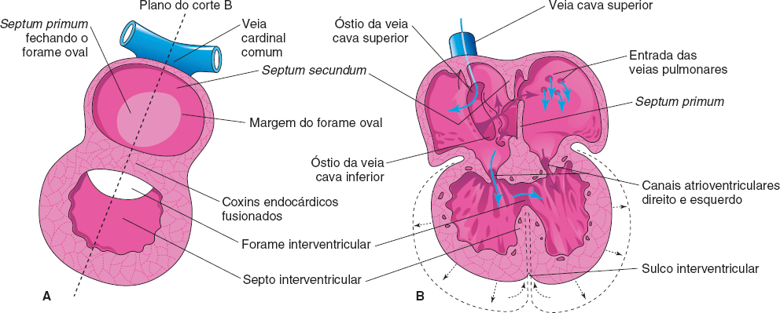
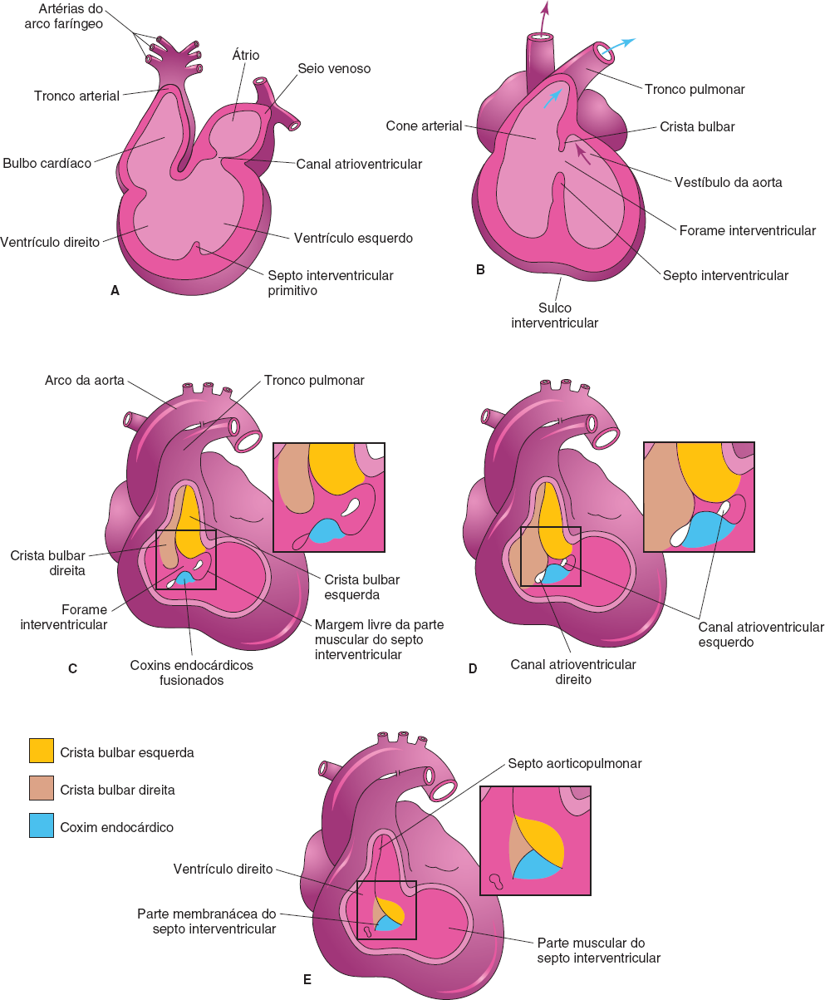
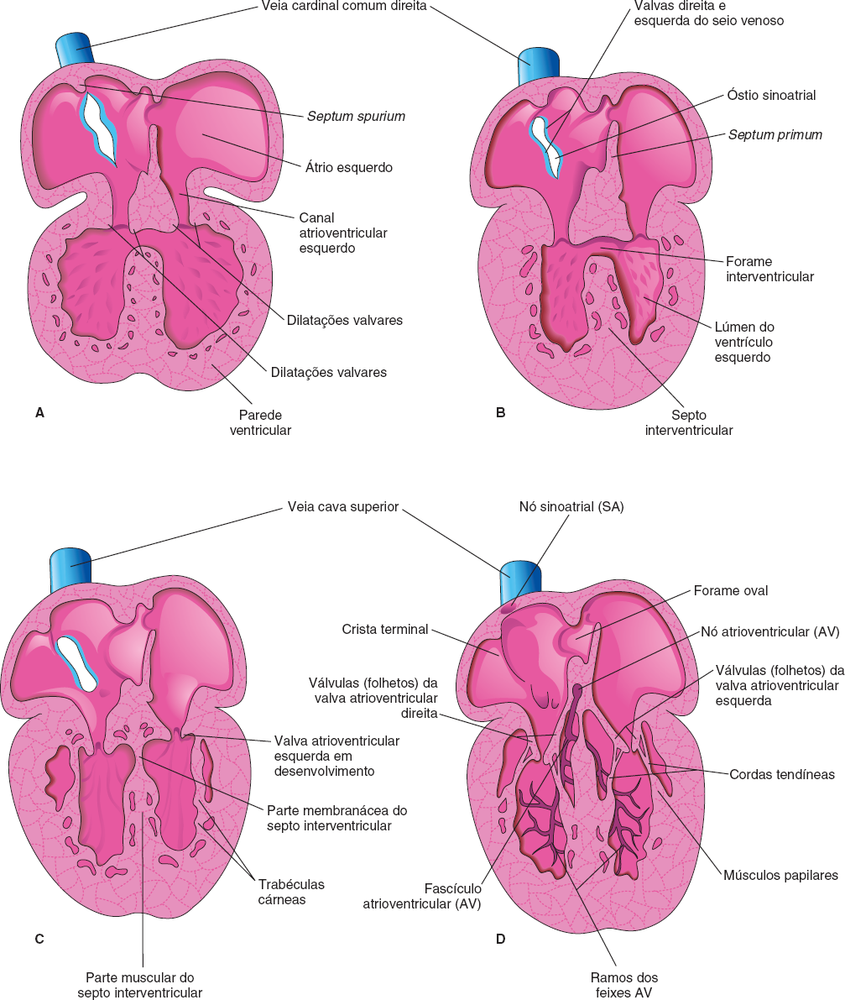
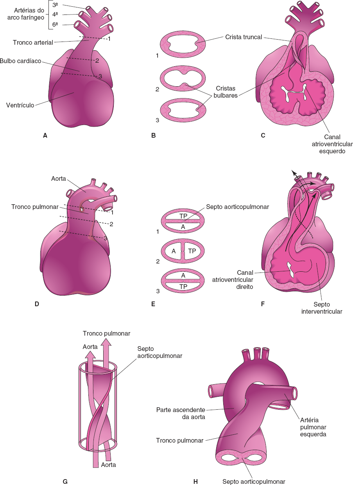
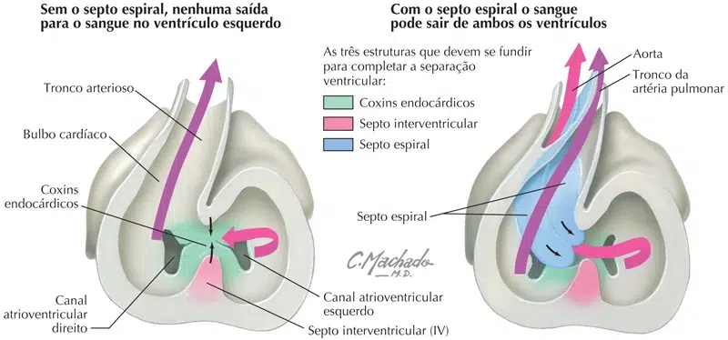

A divisão do ventrículo é indicada por uma crista mediana, o septo interventricular muscular, no assoalho do ventrículo, próximo ao seu ápice. Os miócitos (células musculares) dos ventrículos primitivos esquerdo e direito contribuem para a formação da parte muscular do septo interventricular.
Até a 7ª semana, há um forame interventricular em forma crescente entre a margem livre do septo interventricular e os coxins endocárdicos fusionados. O forame permite a comunicação entre os ventrículos direito e esquerdo, ele geralmente se fecha no final da 7ª semana à medida que as cristas bulbares unem-se ao coxim endocárdico.
O fechamento do forame interventricular e a formação da parte membranácea do septo interventricular resultam da fusão dos tecidos de três fontes: a crista bulbar direita, a crista bulbar esquerda e o coxim endocárdico.
A parte membranácea do septo interventricular deriva da extensão de tecido do lado direito do coxim endocárdico para a parte muscular do septo, bem como das células da crista neural. Esse tecido une-se ao septo aorticopulmonar e à parte muscular espessa do septo interventricular.
Após o fechamento do forame interventricular e a formação da parte membranácea do septo interventricular, o tronco pulmonar está em comunicação com o ventrículo direito, e a aorta comunica-se com o ventrículo esquerdo.
A cavitação das paredes ventriculares forma uma massa esponjosa de feixes musculares, as trabéculas cárneas. Alguns desses feixes tornam-se os músculos papilares e as cordas tendíneas. Os cordões seguem dos músculos papilares para as valvas AV.



Durante a 5ª semana, a proliferação ativa das células mesenquimais nas paredes do bulbo cardíaco resulta na formação das cristas bulbares. Cristas semelhantes contínuas às cristas bulbares formam o tronco arterial / arterioso.
As células da crista neural migram pela faringe primitiva e pelos arcos faríngeos para alcançar as cristas. Enquanto isso ocorre, as cristas bulbares e truncais são submetidas a uma espiralização de 180°.
A orientação espiralada das cristas, causada em parte pelo fluxo sanguíneo dos ventrículos, resulta na formação do septo aorticopulmonar espiral quando as cristas se fundem.
Esse septo divide o bulbo cardíaco e o tronco arterial em dois troncos arteriais, a parte ascendente da aorta (aorta ascendente) e o tronco pulmonar. Por causa da espiralização do septo aorticopulmonar, o tronco pulmonar gira em torno da parte ascendente da aorta.
O bulbo cardíaco é incorporado às paredes dos ventrículos definitivos:
No ventrículo direito, o bulbo cardíaco é representado pelo cone arterial (infundíbulo), que é a origem do tronco pulmonar;
No ventrículo esquerdo, o bulbo cardíaco forma as paredes do vestíbulo da aorta, a parte da cavidade ventricular logo abaixo da valva da aorta.

